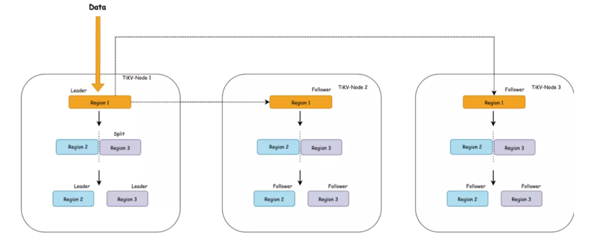

概述
在关系型数据库中，合理的表结构 (schema) 设计可以带来稳定和高效的性能，但是反过来说，如果表结构设计不合理，就可能会引起比较大的性能问题或者额外的工作成本，所以一般公司都会对业务提交的表结构进行自动的(审核工具)或者人工的审核，在业务上线前发现和解决这类问题。本文从表设计相关的一些 case 来总结和分享经验，给大家提供参考，避免线上踩坑。
背景知识
表结构相关的问题许多都是和数据分布有关的，所以这里简单介绍下 TIDB 数据分布相关的知识。
TiDB 以 Region 为单位对数据进行切分，每个 Region 有大小限制（默认 96M）。Region 的切分方式是范围切分。每个 Region 会有多副本，每一组副本，称为一个 Raft Group。每个 Raft Group 中由 Leader 负责执行这块数据的读 & 写（TiDB 即将支持 Follower-Read）。Leader 会自动地被 PD 组件均匀调度在不同的物理节点上，用以均分读写压力。

每个表对应了多个 Region，一个 Region 只会对应一个表，每一个 Region 里是一组有序的数据库记录。这一块不太了解的请阅读下 TIDB 经典文章：谈存储、谈调度，这里篇幅原因不再进行详细说明。
下面来进行一些场景的分享。
典型场景
大表高并发写入性能瓶颈
场景描述
在 MySQL 上，一般使用 InnoDB 存储引擎，这时候 DBA 都会建议使用自增 ID 作为主键，这样可以提升(随机写变顺序写)写入性能和降低数据页的碎片率。
在 TiDB 中，一个表被逻辑的按照主键顺序切分成了多个 Region ，所以如果 TiDB 中也是用递增主键的话，写入的数据就会主要写入到最后一个 Region 里，Region 又是 PD 调度的最小单位，所以这个 Region 在业务写入量较大的情况下，就会是一个热点 Region ，该 Region 所在的 TiKV 的能力决定了这个表甚至集群的写入能力。如果是多个 Region 出现热点读写，TiDB 的热点调度程序是可以将多个热点 Region 调度到不同的 TiKV 实例上来分散压力的，不过这个场景下是无法通过调度解决的。
如何定位
怎么定位到这类问题呢？以下以 TiDB 3.0 版本进行说明。
查看 3.0 Grafana 以下监控：
Grafana ---> TiKV-Trouble-Shooting ----> Hot write
这种场景下，以上监控项可以看到有某个 store 的 QPS 以及 CPU 明显高于其他节点，然后可以通过分析慢查询找到写入慢的表或者通过 pd-ctl
pd-ctl -u "http://{{pd-instance}}:2379" -d region topwrite
找到写入量最大的 Region 的 region_id ，然后通过 region_id 找到对应的表或者索引
curl http://{{tidb-instance}}:10080/regions/{{region_id}}
如何解决
既然 Region 是调度的最小单位，那就要想办法把写入的数据尽量打散到不同的 Region 来通过 Region 的调度来解决此类写入瓶颈问题，TiDB 的隐藏主键上可以实现此类打散功能。
TiDB 对于 PK 非整数或没有 PK 的表，TiDB 会使用一个隐式的自增主键 rowid：_tidb_rowid，这个隐藏的自增主键可以通过设置 SHARD_ROW_ID_BITS 来把 rowid 打散写入多个不同的 Region 缓解写入热点问题。但是设置的过大也会造成 RPC 请求数放大，增加 CPU 和网络开销。
- SHARD_ROW_ID_BITS = 4 表示 2^4（16） 个分片
- SHARD_ROW_ID_BITS = 6 表示 2^6（64） 个分片
- SHARD_ROW_ID_BITS = 0 则表示默认值 1 个分片
使用示例：
CREATE TABLE：CREATE TABLE t (c int) SHARD_ROW_ID_BITS = 4;
ALTER TABLE：ALTER TABLE t SHARD_ROW_ID_BITS = 4;
SHARD_ROW_ID_BITS 的值可以动态修改，每次修改之后，只对新写入的数据生效。可以根据业务并发度来设置合适的值来尽量解决此类热点 Region 无法打散的问题。 另外在 TiDB 3.1.0 版本引入了一个新特 auto_random(试验)，这个声明在表的整数类型主键上，将 auto_increment 改为 auto_random，插入数据时让 TiDB 自动为整型主键列分配一个值，消除行 ID 的连续性，从而达到打散热点的目的，更详细的可以参考 auto_random 详细说明。
新表高并发读写的瓶颈问题
场景描述
这个场景和 TiDB 高并发写入常见热点问题及规避方法 中的 case 类似。
有一张简单的表：
CREATE TABLE IF NOT EXISTS TEST_HOTSPOT(
id BIGINT PRIMARY KEY,
age INT,
user_name VARCHAR(32),
email VARCHAR(128)
)
这个表结构非常简单，除了 id 为主键以外，没有额外的二级索引。写入的语句如下，id 通过随机数离散生成。短时间内密集地写入数据。 乍一看这个场景是随即主键写入，应该不会有性能问题，业务上没有热点产生，只要有足够的机器，就可以充分利用 TiDB 的分布式能力了。
但是在线上却在这个场景下遇到了热点问题，为什么呢？
造成这个现象的原因是：刚创建表的时候，这个表在 TiKV 只会对应为一个 Region，范围是:
[CommonPrefix + TableID, CommonPrefix + TableID + 1)
对于在短时间内的大量写入，它会持续写入到同一个 Region。 
上图简单描述了这个过程，持续写入，TiKV 会将 Region 切分。但是由于是由原 Leader 所在的 Store 首先发起选举，所以大概率下旧的 Store 会成为新切分好的两个 Region 的 Leader。对于新切分好的 Region 2，3。也会重复之前发生在 Region 1 上的事情。也就是压力会密集地集中在 TiKV-Node 1 中。
在持续写入的过程中， PD 能发现 Node 1 中产生了热点，它就会将 Leader 均分到其他的 Node 上。如果 TiKV 的节点数能多于副本数的话，还会发生 Region 的迁移，尽量往空闲的 Node 上迁移，在持续写入一段时间以后，整个集群会被 PD 自动地调度成一个压力均匀的状态，到那个时候才会真正利用整个集群的能力。对于大多数情况来说，这个是没有问题的，这个阶段属于表 Region 的预热阶段。
但是对于高并发批量密集写入场景来说，这个却是应该避免的。
那么我们能否跳过这个预热的过程，直接将 Region 切分为预期的数量，提前调度到集群的各个节点中呢？
解决方法
一、建表时将该表配置 Region 打散
使用带有 shard_row_id_bits 的表时，如果希望建表时就均匀切分 Region，可以考虑配合 pre_split_regions 一起使用(pre_split_regions 必须小于等于 shard_row_id_bits)， 用来在建表成功后就开始预均匀切分 2^(pre_split_regions) 个 Region。语法如下：
create table t (a int, b int,index idx1(a)) shard_row_id_bits = 4 pre_split_regions=2;
二、如果表已存在则可以 Split Region 命令打散 Region
Split Region 是 TiDB 的预切分 Region 的功能，可以根据指定的参数，预先为某个表切分出多个 Region，并打散到各个 TiKV 上去。语法有两种：
SPLIT TABLE table_name [INDEX index_name] BETWEEN (lower_value) AND (upper_value) REGIONS region_num
均匀切分：BETWEEN lower_value AND upper_value REGIONS region_num 语法是通过指定上、下边界和 Region 数量，然后在上、下边界之间均匀切分出 region_num 个 Region。
SPLIT TABLE table_name [INDEX index_name] BY (value_list) [, (value_list)] ...
不均匀切分：BY value_list… 语法将手动指定一系列的点，然后根据这些指定的点切分 Region，适用于数据不均匀分布的场景。 不过这里需要注意的是如果线上打开了 Region Merge 功能，对于以上两种方式 split 超过 split-merge-interval 时间(默认一个小时，可配置)的 Region，如果 Region 数据量还是比较小，满足 Region Merge 的的条件，就会触发 Region Merge 再次导致热点问题。
所以想彻底解决这个问题，TiDB 4.0 以下版本可以通过分区表的方式，将热点数据根据分区键打散到各个分区来解决。在未来的 TiDB 4.0 PD 会提供 Load Base Splitting 策略，除了根据 Region 的大小进行 Region 分裂之外，还会根据访问 QPS 负载自动分裂频繁访问的小表的 Region
普通表清理大量数据相关问题
场景描述
在互联网场景下，线上 DB 中的数据一般都有默认的保留时间，比如有保留最近三个月的、一年和三年等，这样就会有大量的线上过期数据 delete 操作，因为 TiDB 的 KV 层存储用的是 RocksDB，所以 delete 操作过程可以简单描述为：
- TiDB 从 TiKV 读取符合条件的数据
- 然后执行 delete 操作
- 在 TiKV 写入这条记录的删除记录
- 等待 RocksDB Compaction之后，这条记录才被真正的删除
从以上过程可以看到删除的工作很重，删除的速度也就会比较慢，效率非常低下，线上可能会出现删除速度跟不上写入速度情况出现，这样又无法满足业务清理数据需求，又增加了存储和计算层的压力，进而导致删除数据期间性能抖动比较明显，影响线上正常业务。
如何解决
针对这个场景，TiDB 的分区表可以比较好的解决，分区表的每一个分区都可以看做是一个独立的表，这样如果业务要按照日期清理数据，只需要按照日期建立分区，然后定期去清理指定的日期之前的分区即可，清理分区走的是 Delete Ranges 逻辑，简单过程是：
- 将清理的分区写入 TiDB 的 gc_delete_range 表
- Delete Ranges 会将这些时间戳在 safe point 之前 gc_delete_range 表中的区间进行快速的物理删除
这样就减少了 TiDB 和 TiKV 的数据交互，也避免了往 TiKV写入大量的 delete 记录，也避免了 TiKV 的 RocksDB 的 compaction 引起的性能抖动问题，从而彻底的解决了清理数据慢影响大的问题。
分区表的使用和限制见官方文档。
其它
受限于篇幅问题，以下的一些 case 就不做详细介绍了，简单总结下：
- 避免高并发写入的表上存在顺序写入的二级索引，也会造成写入热点，并且暂时没有较好的解决方案。
- 提前确认 TiDB 和 MySQL 相比不同或不支持的特性，比如不允许降低字段长度、不允许修改 DECIMAL 的精度等。如果上线后发现必需要进行相关操作，那只能通过重建表迁移数据的方式，对业务影响很大，风险也很大。
- 不要在线上搞过大的宽表以及大量索引。
- 线上遇到一个 case 是，一个类似数据中台的服务，把从其它存储获取的数据写入到 TiDB 的一张宽表( 70 个字段)上，迁移过来时候基本每个字段都带有索引，业务解释多个索引是为了兼顾业务多样性的需求，最后业务上线后 TP99 线直接飙升到 130ms，业务无法接受延迟，最后在推进优化为7个组合索引后，TP99 恢复到 60ms 达到业务预期。
总结
以上 case 是在线上遇到的一些常见的因为表设计相关的问题，主要是热点、GC 或者功能相关的问题，这些问题可能会对线上稳定性造成比较严重的冲击，希望大家在线上可以根据不同场景采用不同的解决方案，规避掉这些风险，保障线上 DB 的正常服务。
- 线上遇到一个 case 是，一个类似数据中台的服务，把从其它存储获取的数据写入到 TiDB 的一张宽表( 70 个字段)上，迁移过来时候基本每个字段都带有索引，业务解释多个索引是为了兼顾业务多样性的需求，最后业务上线后 TP99 线直接飙升到 130ms，业务无法接受延迟，最后在推进优化为7个组合索引后，TP99 恢复到 60ms 达到业务预期。